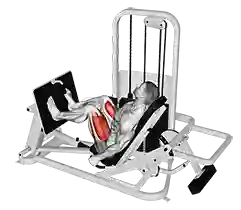
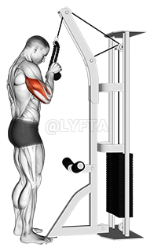

Palestra e Bodybuilding
Andrea Perillo 3AIA
Guida completa per neofiti
Cos'è il bodybuilding?
Il culturismo o cultura fisica (in inglese bodybuilding) è una disciplina che tramite l'allenamento con pesi, sovraccarichi (resistance training) e un'alimentazione specifica si pone come fine ultimo il cambiamento della composizione corporea, con l'aumento della massa muscolare e la riduzione del grasso corporeo, dove le finalità sono estetiche ma anche competitive.
Il bodybuilding è una qualsiasi attività finalizzata rimodellare esteticamente l'organismo aumentando la quantità di massa muscolare (ipertrofia) e riducendo i livelli di adiposità (massa grassa).
Come bisogna allenarsi?
Non esiste un unico metodo che permette di guadagnare una miglior composizione corporea, ma uno risulta senza dubbio più efficacie degli altri: il resistance training (sovraccarico) associato a dieta specifica (dieta per la massa e cutting, alternati a seconda dell'obbiettivo periodico).
Il sistema più proficuo è quindi l'allenamento che sfrutta i sovraccarichi; anche se ciò non toglie che la routine del bodybuilder includa quasi sempre anche esercizi callistenici ed esecuzioni specifiche di altre discipline (powerlifting o, più raramente, weightlifting).
Non solo; in certi contesti il culturismo può anche includere attività aerobiche, che permettono di aumentare il dispendio energetico, e di altro genere (funzionali ecc.).
Il resistance training del bodybuilding è un allenamento ad alta intensità (HIT) e intervallato (HIIT).
Il focus della programmazione è su:
aumento dell'espressione di forza massimale, perché correlata all'aumento del tessuto contrattile delle cellule muscolari;
aumento della forza resistente di breve durata, perché correlata all'aumento di varie componenti citoplasmatiche delle cellule muscolari (riserve di fosfageni, di glicogeno, acqua, organelli, pool enzimatici ecc.).
Detto questo, bisogna tenere in considerazione che:
nel soggetto natural, a parità di altre variabili, ipertrofia e forza sono direttamente proporzionali: più si è forti, più si è grossi;
ma, al tempo stesso, concentrandosi solo sulla forza pura non si avrà mai la possibilità di raggiungere il massimo potenziale ipertrofico.
Ecco una tabella con gli esercizi più efficaci:
| muscolo |
esercizi |
foto |
| petto |
chest press |
 |
| schiena |
lat machine |
|
| gambe |
leg press |
 |
| tricipiti |
push down con corda |
 |
| bicipiti |
curl alla scott |
|
Quante volte allenarsi?
Parlando di sessioni settimanali, in maniera approssimativa, potremmo dire che:
- un neofita può ottenere buoni risultati con 2-3 allenamenti settimanali.
- un avanzato può tentare di raggiungere i 4-5 allenamenti, ma non è detto che l'aumento delle sessioni si dimostri efficacie e quindi sensato.
- i professionisti tollerano solitamente bene anche 5 o più allenamenti a settimana, ma spesso non fanno altro nella vita, usano doping e sanno ben ripartire il carico allenante nelle sedute.
Generalmente non bisogna mai allenarsi troppo perchè cosi facendo si rischierebbe di andare in sovrallenamento peggiorando i progressi e basta.
Come si deve mangiare?
La dieta è un aspetto cruciale, che rappresenta il 50% del lavoro complessivo.
Quando si inizia un programma di allenamento, bisogna tenere bene a mente che:
- Assumendo le calorie necessarie a soddisfare il fabbisogno si instaura un bilancio calorico neutro: l'adipe (percentuale di grasso nel corpo) non aumenta, ma nemmeno il muscolo.
- Assumendo meno calorie del necessario si instaura un bilancio calorico negativo: l'adipe diminuisce (dimagrimento) ma in maniera relativa all'entità del cut energetico verosimilmente anche il muscolo (diete drastiche e/o prolungate sono generalmente controproducenti). Inoltre, le prestazioni di forza vanno diminuendo;
- Assumendo più calorie del necessario si instaura un bilancio calorico positivo: aumentano sia l'adipe che il muscolo, ma il rapporto tra i due cambia significativamente in base all'entità del surplus calorico, alla ripartizione dei macronutrienti, al prolungamento nel tempo e a "come risponde l'organismo". Inoltre, le prestazioni di forza dovrebbero aumentare.
Se ne deduce che, sempre nel natural, e sempre parlando di soggetti già condizionati, sia impossibile aumentare di massa muscolare e dimagrire al tempo stesso. Ragione per la quale è necessario alternare periodi nutrizionali dedicati all'ipertrofia a periodi nutrizionali dedicati alla definizione e al ripristino della sensibilità insulinica.
Per quanto riguarda gli integratori?
Gli integratori e i supplementi nutrizionali in genere passano in secondo piano rispetto all'allenamento e alla dieta.
Tuttavia, alcuni possono essere utili, ma in maniera relativa.
- Integratori utili generalmente sempre: creatina monoidrato e, eventualmente, beta-alanina. Per sostenere energia e forza.
- Integratori utili in dieta ipocalorica: multivitaminici e minerali, talvolta maltodestrine peri-workout (negli allenamenti troppo lunghi ed impegnativi), talvolta proteine in polvere (quando la gestione logistica e temporale impedisce di mangiare correttamente, soprattutto nel post-workout);
- Integratori utili in dieta ipercalorica: oltre a creatina e beta-alanina, praticamente nessuno, con eccezione dei migliorativi della sensibilità insulinica – ma non è detto che funzionino, o che facciano la differenza.
Riepilogo
Riassumendo in breve per allenarsi bene e ottenere buoni risultati bisogna:
- allenamento: allenarsi seguendo una scheda programmata da esperti usando il metodo del sovraccarico (aumento graduale dei carichi), ripartendo gli allenamenti tra le 2 e le 4 volte a settimana stando attenti a non sovrallenarsi.
- alimentazione: seguire una alimentazione specifica basata sul vostro obbiettivo (diete: ipocalorica, ipercalorica o di mantenimento).
- integrazione: gli integratori non sono fondamentale come i due punti citati in precedenza, ma possono essere comunque di aiuto in base al tipo di dieta che si segue.
Cliccare qui per la fonte delle informazioni